Tareas y métodos en minería de datos
Tema 5 de 6 Cuarto curso, 1.º cuatrimestre ≈ 21 min de lectura
Temas de MYAD · 5/6
5.1 Tareas frente a métodos
Una tarea de minería de datos es un tipo de problema: clasificar piezas en válidas o defectuosas, predecir las ventas de tomates en 2025… Un método es la técnica o algoritmo que resuelve la tarea. No todos los métodos sirven para todas las tareas.
Las tareas principales se dividen en dos familias:
| Análisis predictivo | Análisis descriptivo |
|---|---|
| Clasificación, regresión, análisis de series temporales | Clustering, reglas de asociación, análisis secuencial |
- Predictivas: hay que predecir uno o más valores para uno o más ejemplos. Los datos de entrenamiento van etiquetados con una salida (clase, categoría o valor numérico) o con un orden entre ellos. Puede predecirse incluso un vector de muchos valores a la vez (p. ej. reconstruir una imagen de tomografía por impedancia eléctrica a partir de medidas, Fernández-Fuentes et al., 2018).
- Descriptivas: los ejemplos no tienen etiqueta ni orden; no se busca predecir datos nuevos sino describir los existentes.
5.1.1 Notación del conjunto de datos
Las instancias se describen con valores de una serie de atributos (nominales o numéricos). El espacio de instancias es el producto de los dominios de los atributos,
| ID | Habitaciones | Baños | Metros | Terraza | Altura |
|---|---|---|---|---|---|
| 1 | 2 | 1 | 50 | False | 3 |
| 2 | 4 | 2 | 110 | True | 5 |
| … | … | … | … | … | … |
| n | 1 | 1 | 40 | True | 1 |
Cada fila es una instancia
5.2 Tareas predictivas
5.2.1 Clasificación
Las observaciones son pares
El objetivo es aprender una función, el clasificador
Hay varias variantes:
- Clasificación suave (soft): además de
, se aprende otra función que da el grado de certeza de la predicción. Ejemplos: probabilidad de que un correo sea spam ("potencialmente spam"), el mejor medicamento con su certeza, futuras compras de un cliente con su certeza. - Estimación de la probabilidad de clasificación: generaliza la anterior. Se aprenden
funciones, una por clase, y cada una da la probabilidad de pertenecer a su clase. El conjunto se llama estimador de probabilidad (p. ej. perro 0,80; gato 0,15; conejo 0,05; o ibuprofeno 0,35, paracetamol 0,30, frenadol 0,20, aspirina 0,15). - Categorización multiclase (multietiqueta): asignar una o varias categorías a una observación, como el etiquetado automático de documentos o imágenes (una foto: "industria", "grúa", "almacén"). Si se presenta como estimador de probabilidades, las probabilidades pueden sumar más de 1, porque las categorías no son excluyentes.
- Preferencias o priorización: aprender a ordenar instancias. Cada ejemplo es una secuencia
con , y el orden es la predicción ( ). En la versión simplificada se comparan pares: se entrena con pares ordenados como y luego, dadas dos instancias, se predice cuál va antes. Ejemplo: ordenar candidatos a un puesto según sus características y selecciones anteriores.
5.2.2 Regresión
Igual que en clasificación, los datos son pares
Un método de regresión puede convertirse en un clasificador binario suave aplicando un umbral a la salida: es lo que hace la regresión logística.
Se usa muchísimo en industria, ventas o economía: estimar las ventas de 2023, el número de unidades defectuosas de una partida, el salario en Madrid, el precio de la vivienda o la humedad de la fibra en un punto de la fabricación de tableros.
5.3 Tareas descriptivas
5.3.1 Agrupamiento (clustering)
Se buscan grupos entre los elementos de entrada
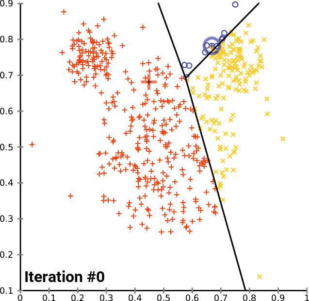
Utilidades:
- Predecir el comportamiento de una instancia nueva por el grupo en que cae (se parecerá al resto). P. ej. segmentar clientes, estudiar el impacto de un producto en cada segmento y orientar campañas.
- Entender un dataset grande: reducir miles de instancias a media docena de grupos estudiables.
- Encontrar subgrupos que se "separan" de la población (observaciones raras o anómalas).
Ejemplos: familias de productos en tiendas, segmentación para publicidad, comunidades en redes sociales, segmentación de imágenes (bordes, objetos), ciencias sociales (crimen, educación), agrupar genes similares.
5.3.2 Reglas de asociación
Se usan con atributos nominales/categóricos para encontrar asociaciones entre observaciones. Sobre
- Son direccionales: "si compra aguacates, tomate y cilantro, entonces compra lima" no permite concluir lo contrario.
- También hay reglas bidireccionales: "comprar hamburguesa sucede conjuntamente con comprar kétchup".
Su escenario estrella es el análisis de la cesta de la compra, para campañas dirigidas: descubrir que quien compra leche de soja suele comprar pan de semillas, o que "si tiene 18 años y compra folios y una perforadora, entonces compra una carpeta" → crear un pack para estudiantes.
5.3.3 Reglas de asociación secuenciales
Buscan asociaciones que no ocurren en el mismo momento: patrones secuenciales frecuentes. Sirven para entender el comportamiento en el tiempo (orden de compras, interacción con servicios). Ejemplo: quien compra medicamentos para el resfriado probablemente compre vitamina C en una semana y suplementos inmunitarios en tres semanas.
5.4 Métodos predictivos
Cada tarea se puede resolver con varios métodos y cada método sirve para muchas tareas, pero no para todas. Clasificar los métodos es muy complicado porque muchos son híbridos.
5.4.1 Técnicas algebraicas y estadísticas
Expresan el modelo con fórmulas (funciones lineales, no lineales…). Parten de un modelo con parámetros y estiman sus valores para que se ajuste lo mejor posible a los ejemplos: son técnicas paramétricas. El caso típico es la regresión lineal:
donde
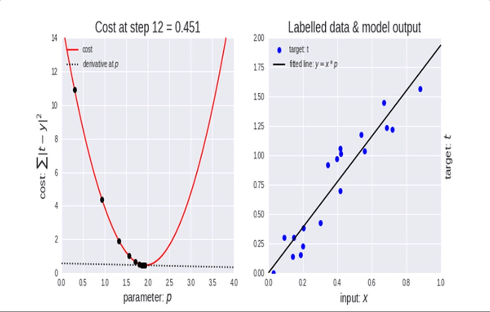
Izquierda: el coste (error) baja a medida que se ajusta el parámetro hasta llegar al mínimo. Derecha: la recta resultante sobre los datos.5.4.2 Técnicas bayesianas
Estiman la probabilidad de pertenecer a una clase mediante probabilidades condicionadas y el teorema de Bayes:
El más popular es el clasificador bayesiano naive: calcula la probabilidad de cada clase según los valores de los atributos y elige la más alta. Supone (hipótesis naive, "ingenua") que todos los atributos son independientes: la presencia de una característica no tiene que ver con la de otra. Así, la probabilidad de una clase se obtiene multiplicando, para todos los atributos, la probabilidad de esa clase condicionada al valor de cada atributo. Aunque la hipótesis suele ser falsa, funciona bien en muchísimas tareas.
5.4.3 Árboles de decisión
Un árbol es un conjunto de condiciones organizadas jerárquicamente: la decisión final se obtiene siguiendo las condiciones que se cumplen desde la raíz hasta una hoja. Son fáciles de usar e interpretar y se construyen por divide y vencerás.
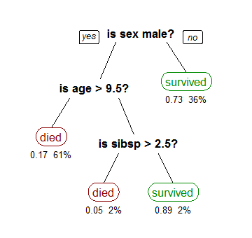
¿Es hombre? → ¿edad > 9,5? → ¿hermanos/cónyuges a bordo > 2,5? Cada hoja da la clase (sobrevive/muere), su probabilidad y el % de pasajeros que llegan a ella.Durante el entrenamiento, el árbol aprende qué preguntas separan mejor las clases, dividiendo recursivamente los datos en subconjuntos cada vez más homogéneos (partición recursiva del espacio). Cada nodo interno pregunta por un atributo; cada hoja da una clase; y cada camino raíz → hoja es una regla (p. ej. "edad ≤ 30 y género masculino → sí").
Se construye en dos fases:
- Crecimiento: desde la raíz, en cada nodo se elige la condición que mejor separa las instancias, usando una función que compara las frecuencias relativas de las clases en los hijos con las del padre (cuanto más "puros" quedan los hijos, mejor). Una partición elegida no se reevalúa.
- Poda: el árbol crecido es completo y consistente con los ejemplos (los cubre todos), pero demasiado específico: no generaliza. La poda elimina condiciones para hacerlo más general:
- Prepoda: un criterio de parada durante la construcción impide seguir especializando una rama.
- Postpoda: con el árbol ya construido, se eliminan nodos de abajo arriba. Ventaja: se decide con la visión completa del modelo.
Algoritmos clásicos: ID3, C4.5, CART.
Para entenderlo mejor
Decision and Classification Trees, Clearly Explained!!! — StatQuest construye un árbol paso a paso eligiendo la mejor división (vídeo, 18 min, inglés).
5.4.4 Máquinas de soporte vectorial (SVM)
Las SVM son clasificadores lineales: buscan un hiperplano que separe los grupos. En
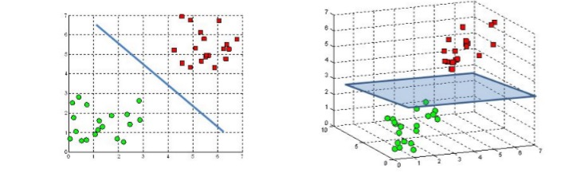
Entre todos los hiperplanos posibles, la SVM elige el que maximiza el margen, la distancia a los puntos más cercanos de cada clase, llamados vectores de soporte (al menos uno por clase).
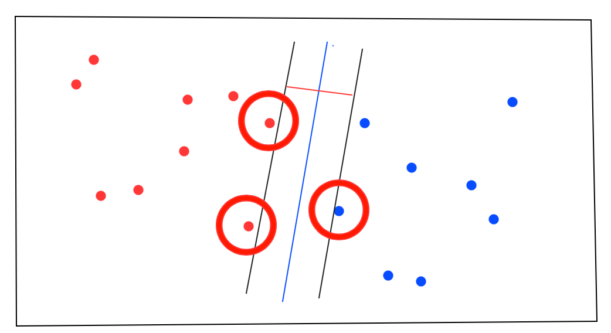
Los puntos rodeados son los vectores de soporte; el margen es la franja entre las líneas paralelas.Cuando los datos no son linealmente separables, se usan funciones kernel: proyectan las observaciones a un espacio de mayor dimensión donde sí puede encontrarse un hiperplano separador.
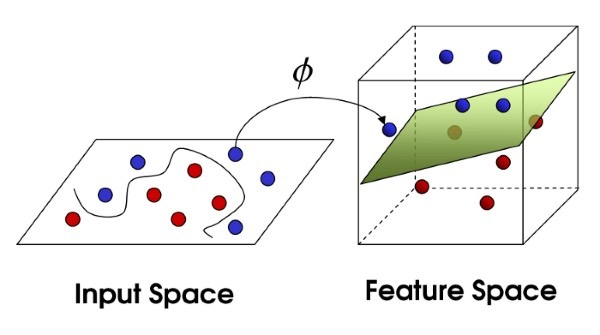
Rojos y azules están mezclados en el plano (input space); al proyectarlos a 3D (feature space), un plano los separa.Analogía
Monedas rojas y azules mezcladas sobre una mesa: no puedes separarlas con una regla. Pero si das un golpe a la mesa y las rojas (más ligeras) saltan más alto, en el aire una hoja de papel horizontal sí las separa. El kernel es ese "golpe" que añade una dimensión.
5.4.5 Redes neuronales artificiales
Nacen intentando imitar el cerebro. Se organizan en capas: una de entrada,
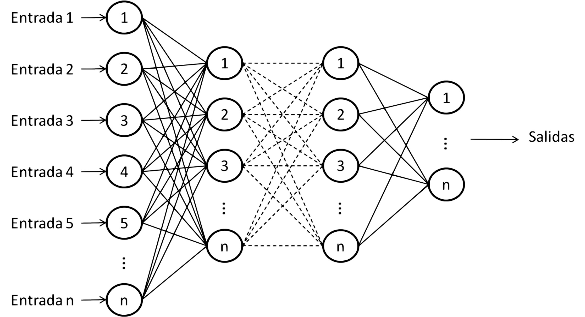
Cada neurona calcula la suma ponderada de sus entradas y le aplica una función de activación (p. ej. la sigmoide
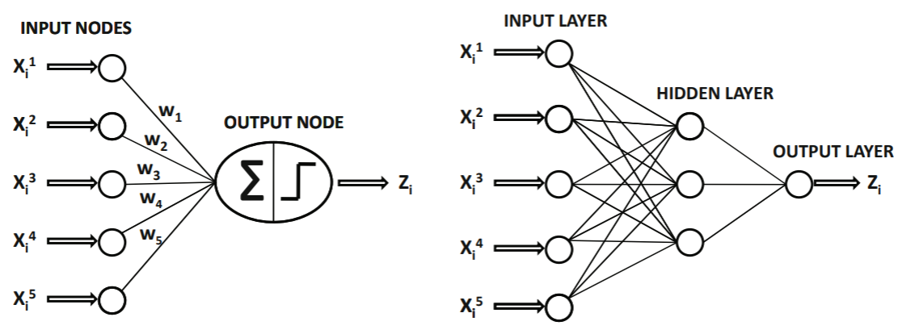
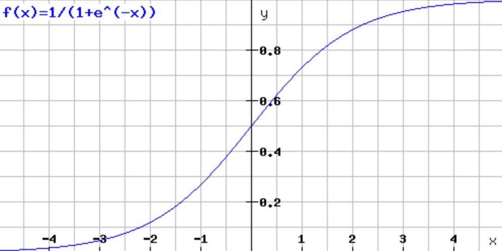
El modelo se aprende ajustando los pesos de las conexiones; la topología y los pesos determinan el patrón aprendido. El entrenamiento:
- Se parte de pesos aleatorios.
- Cálculo hacia delante: con los pesos actuales se obtiene una salida y se compara con la esperada → error.
- Backpropagation: ese error se usa para ajustar los pesos, minimizando una función de coste con, p. ej., descenso de gradiente.
- Se repite.
Su popularidad ha crecido con el Big Data y la capacidad de cálculo, por sus buenos resultados. Pegas: muy costosas de entrenar y poco explicables (cajas negras), un problema en tareas donde hay que entender la predicción (medicina). La familia es enorme: ver el Neural Network Zoo (enlazado en las diapositivas).
5.4.6 Ensembles
Un ensemble combina varios modelos base para obtener predicciones más precisas que cada uno por separado. Lo habitual es combinar por votación (clasificación). Se usan sobre todo en tareas predictivas, aunque podrían extenderse a descriptivas.
La calidad depende de la precisión y la diversidad de los modelos base: si todos son parecidos, cuando uno se equivoca se equivocan todos y la combinación también; si son diversos, sus errores están poco correlacionados y la combinación acierta más.
Analogía
Es "la sabiduría de la multitud": preguntar a 100 personas distintas el peso de un buey y promediar acierta más que cualquiera de ellas. Pero si las 100 copian a la misma persona, el promedio es tan malo como ella.
Formas de construirlos:
- Centrados en el modelo: combinar modelos de distinto tipo.
- Centrados en los datos: el mismo tipo de modelo entrenado con distintos subconjuntos de datos o con variaciones de los atributos de entrada.
Bagging (Bootstrap aggregation): genera subconjuntos de entrenamiento eligiendo al azar y con reemplazamiento
Random Forest: un bosque de árboles de decisión, normalmente construido con bagging. Los árboles son muy sensibles a pequeños cambios en los datos (inestabilidad); los modelos así se llaman weak learners, y precisamente esa variabilidad aporta la diversidad que necesita el ensemble. Predice por votación (clasificación) o media (regresión).
Para entenderlo mejor
StatQuest: Random Forests Part 1 — cómo se construye y evalúa un random forest con bootstrap (vídeo, 10 min, inglés).
5.5 Métodos descriptivos
5.5.1 Técnicas de agrupamiento
| Familia | Idea | Métodos |
|---|---|---|
| Basadas en distancia (no paramétricas) | Agrupan según medidas de distancia | Particionamiento: k-Means, x-Means, k-Medoids. Jerárquicos: aglomerativos, divisivos |
| Basadas en densidad (no paramétricas) | Usan el grado de aglomeración de los datos | DBSCAN |
| Basadas en distribuciones (paramétricas) | Proponen un modelo como hipótesis y buscan el mejor ajuste | Modelo de mezcla gaussiana (GMM) |
k-Means
Divide
Algoritmo:
- Elegir
entidades al azar como centroides iniciales. - Asignar cada elemento al centroide más cercano.
- Recalcular los centroides de cada grupo.
- Repetir 2–3 hasta que los centroides no cambien significativamente.
Ejemplo paso a paso (1D, $k=2$)
Puntos: 1, 2, 3, 8, 9, 10. Centroides iniciales: 1 y 2.
| Iteración | Centroides | Grupo A | Grupo B | Nuevos centroides |
|---|---|---|---|---|
| 1 | 1 ; 2 | {1} | {2, 3, 8, 9, 10} | 1 ; 6,4 |
| 2 | 1 ; 6,4 | {1, 2, 3} | {8, 9, 10} | 2 ; 9 |
| 3 | 2 ; 9 | {1, 2, 3} | {8, 9, 10} | 2 ; 9 → no cambian, fin |
Con una mala inicialización (dos centroides juntos) el primer reparto es absurdo, pero el algoritmo lo corrige en pocas iteraciones. No siempre lo consigue: por eso se repite con varias inicializaciones.
Características:
- Popular, fácil de implementar y rápido.
- No funciona bien con datos categóricos (no hay "media" de colores).
- Hay que fijar
de antemano: ¿cuántos grupos? - Converge a mínimos locales: sin garantía del óptimo global; se mitiga ejecutándolo
veces con inicializaciones distintas. - Muy sensible a los centroides iniciales y a los atípicos.
- Problemas con grupos de distinto tamaño o formas no convexas: asume grupos de tamaño similar y convexos.
Para entenderlo mejor
08. K-Means | Centroides, método del codo y Silhouette — el algoritmo paso a paso y cómo elegir
Clustering jerárquico
No hace falta fijar el número de grupos. Crea una jerarquía de clústeres (cada nodo tiene un solo padre y puede tener varios hijos) que se dibuja como un árbol llamado dendrograma; cortándolo a distinta altura se obtienen más o menos grupos.
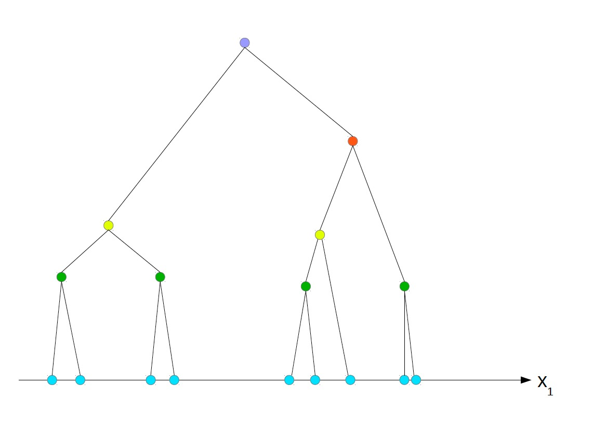
- Aglomerativo (ascendente): empieza con cada punto como un clúster y va fusionando los más próximos, recalculando la matriz de proximidad en cada nivel.
- Divisivo (descendente): empieza con todo junto y va dividiendo: primero parte el conjunto con un método plano como k-means y después vuelve a partir los clústeres con mayor SSE (suma de errores al cuadrado). Para al llegar a nodos individuales o a un SSE mínimo.
DBSCAN
Busca regiones con la densidad (concentración de puntos) que fija el usuario, mediante un radio de vecindad y un número mínimo de puntos. Clasifica cada punto en:
- Punto central: su vecindad tiene al menos el mínimo de puntos.
- Punto fronterizo: su vecindad tiene menos del mínimo, pero contiene un punto central.
- Atípico: ni central ni fronterizo.
Gracias a esto encuentra grupos de cualquier forma y detecta atípicos, justo donde k-Means falla:
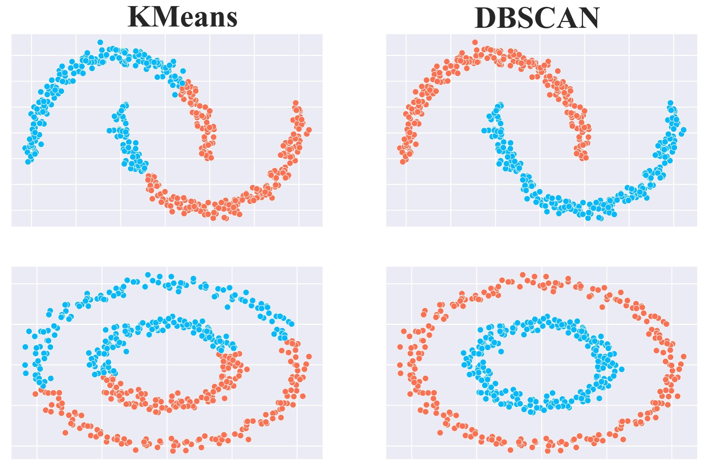
Con dos medias lunas o dos anillos, k-Means corta por la mitad; DBSCAN sigue la forma de cada grupo.GMM (modelo de mezcla gaussiana)
Da una base estadística: cada observación tiene una probabilidad de pertenecer a cada grupo (en vez de una asignación tajante). Supone que los datos se generan a partir de una mezcla de
- Inicialización: parámetros iniciales, p. ej.
grupos sacados con k-Means. - Iteración hasta converger o agotar iteraciones:
- Paso E (expectación): con los parámetros actuales se calcula, para cada dato, la probabilidad de pertenecer a cada gaussiana.
- Paso M (maximización): se recalculan los parámetros a partir de esas probabilidades.
5.5.2 Técnicas basadas en conteo de frecuencias: Apriori
Encuentran de forma eficiente conjuntos de ítems frecuentes: se empieza por pares de sucesos y se van ampliando los conjuntos solo si su frecuencia conjunta supera un umbral. Con esa información se construyen reglas de asociación.
Apriori es el algoritmo más simple y popular. Busca los conjuntos de ítems que superan un umbral de frecuencia y los convierte en reglas. Dos medidas valoran una regla:
- Soporte (cobertura): instancias que contienen el conjunto ÷ total de instancias.
- Confianza de "si X entonces Y": porcentaje de veces que la regla se cumple cuando se puede aplicar,
.
Ejemplo: cestas de la compra
7 cestas: {pan, leche, galletas, café}, {pan, leche, café}, {pan, leche}, {leche, galletas, café}, {leche, galletas}, {galletas, café}, {leche, café}. Umbral: 3 apariciones (soporte ≥ 3/7 ≈ 0,43).
Paso 1. Conjuntos frecuentes.
| k = 1 | frec | k = 2 | frec | k = 3 | frec |
|---|---|---|---|---|---|
| Pan | 3 ✔ | Pan, leche | 3 ✔ | Pan, leche, galletas | 1 |
| Leche | 6 ✔ | Pan, galletas | 1 | Pan, leche, café | 2 |
| Galletas | 4 ✔ | Pan, café | 2 | Leche, galletas, café | 2 |
| Café | 5 ✔ | Leche, galletas | 3 ✔ | Pan, galletas, café | 1 |
| Leche, café | 4 ✔ | ||||
| Galletas, café | 3 ✔ |
Ningún trío llega a 3, así que el proceso para en k = 2.
Paso 2. Reglas de los pares frecuentes, quedándonos con confianza ≥ 70 %:
| Regla | Confianza | ¿Pasa? |
|---|---|---|
| pan ⇒ leche | 3/3 = 1 | ✔ |
| leche ⇒ pan | 3/6 = 0,5 | |
| leche ⇒ galletas | 3/6 = 0,5 | |
| galletas ⇒ leche | 3/4 = 0,75 | ✔ |
| leche ⇒ café | 4/6 ≈ 0,67 | |
| café ⇒ leche | 4/5 = 0,8 | ✔ |
| galletas ⇒ café | 3/4 = 0,75 | ✔ |
| café ⇒ galletas | 3/5 = 0,6 |
Erratas en las diapositivas
La diapositiva da 1 para {pan, leche, café} (aparece en 2 cestas), y 0,5 y 0,6 para leche ⇒ café y café ⇒ leche. Con los datos de la propia diapositiva salen 0,67 y 0,8, así que café ⇒ leche también supera el 70 %. Las cifras de arriba están recalculadas.
Para entenderlo mejor
Algoritmo apriori — Wikipedia — descripción del algoritmo y la propiedad de los subconjuntos frecuentes (artículo).
5.x Ideas clave
- Tarea = tipo de problema; método = algoritmo que lo resuelve. Predictivas (datos etiquetados) vs descriptivas (sin etiqueta).
- Clasificación:
con nominal (binaria si 2 clases). Variantes: suave (certeza), estimador de probabilidad (una función por clase), multiclase/multietiqueta (probabilidades pueden sumar > 1), preferencias (ordenar). - Regresión: salida numérica continua; con umbral → clasificador suave (regresión logística).
- Descriptivas: clustering (grupos que se crean al aprender), reglas de asociación (direccionales o bidireccionales; cesta de la compra), secuenciales (en el tiempo).
- Métodos predictivos: regresión lineal
(paramétrica), naive Bayes (atributos independientes), árboles (crecimiento + pre/postpoda; ID3, C4.5, CART; explicables), SVM (hiperplano de margen máximo, vectores de soporte, kernel), redes neuronales (pesos, activación, backpropagation; cajas negras), ensembles (precisión + diversidad; bagging, random forest). - Clustering: k-Means (k fijo, rápido, mínimos locales, sensible a inicio y atípicos, solo convexos), jerárquico (dendrograma, aglomerativo/divisivo), DBSCAN (densidad: central, frontera, atípico; formas arbitrarias), GMM (probabilístico, EM).
- Apriori: conjuntos frecuentes (umbral de soporte) → reglas (umbral de confianza = frec(X∪Y)/frec(X)).